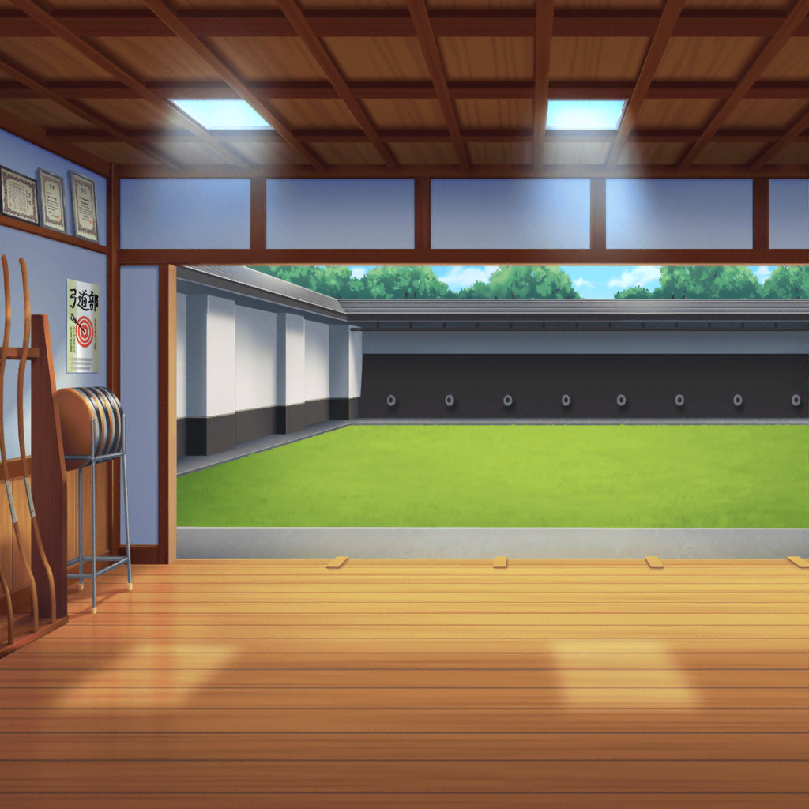

花咲川女子学園 弓道場
紗夜
まだ、狙いが低すぎますね。
狙いを徐々に、高く修正してみてください
燐子
……っ……はい……！
紗夜
少しずつですが、的に近づいています。
そのまま狙いを修正してください。顎はもう少し引いて――
イヴ
わぁ……！
リンコさんが弓を引く姿、とても素敵ですっ♪
花音
うん。燐子ちゃん、ものすごく頑張ってるね。
けど……的にはまだ、届いてないみたい
美咲
初心者は、矢を飛ばすことすら難しいって言いますしね。
さすがに、今日中にっていうのはムリなんじゃ……
イヴ
でも、リンコさんは諦めていません。
リンコさんの目が、そう言っています！
花音
うん。燐子ちゃんなら、きっとできるよ。
そのためにも……
美咲
あたし達がやるべき事は、精一杯の応援ってことですよね
イヴ
その通りですっ！ 応援も、全力でいきましょう！
――リンコさーん！ 頑張ってくださーい！
燐子
……！ 今の声……若宮さん……？
花音
燐子ちゃん、頑張って！
美咲
落ち着いて頑張ってください
燐子
松原さんと……奥沢さんも……わたしを、応援してくれてる……
応援してもらってるんだから……頑張らなくちゃ……っ
紗夜
白金さん。私からひとつ、アドバイスがあります。
よく聞いてください。
……『誰かの期待に応えようとしないこと』。いいですね？
燐子
……え……？ で……でも……
紗夜
弓道にとって大切なこと。
それがなんだったか、思い出してください
燐子
あ……
燐子
（そうか……的にあてることを……目的にしない……
弓を引く姿勢……それだけに、集中する……心……）
燐子
（それは……周りの環境に……左右されない……集中力……？
……どんな場面でも……弓を引くこと……ただ、それだけに……
集中できるか、どうか……）
紗夜
正しく弓を引けば、矢は自ずと的にあたります。
白金さん。そのことを……どうか忘れないで
燐子
……は……はい……っ
燐子
（……不思議……氷川さんの言葉で……周りの音が、
一気に……引いていって…………すごく、静か）
燐子
（道着の衣擦れと、床が軋む音……それから……
わたしの鼓動……頭の中……霧が、晴れていくみたいに……
スッキリして…………心地いい……）
花音
……燐子ちゃん、すごいね。今までで一番集中してるみたい
イヴ
はいっ。それに……なんだか、気迫のようなものを感じます
イヴ・花音・美咲
……っ
紗夜
……
燐子
……っ……！
イヴ
！！
花音
あっ……
美咲
……すご……
イヴ
やったぁ！ やりました！
リンコさん、命中ですっ！ あたりましたよ！
燐子
……はい……び……びっくり、しました……
紗夜
やりましたね、白金さん。
最後の一射、本当に素晴らしかったですよ
燐子
……っ……あ……ありがとうございます……！

部活終了後
川沿いの道
イヴ
リンコさん、今日はお疲れさまでした。
矢が的にあたった瞬間、私、泣いてしまうかと思いましたっ！
花音
じ……実は私も……少しだけ……
美咲
あはは。それで、燐子先輩。
どの部活に入るかは決まったんですか？
燐子
……はい。わたし……決めました
イヴ
ついに決まったんですねっ。
一体、どの部活に入るんですか？
燐子
わたしは……部活には入りません
イヴ
ええっ！？
美咲
あー、まあいいんじゃないですか？
部活って、ムリに入るもんでもないですし
紗夜
白金さん……なんだかとても、清々しい表情をしていますね？
燐子
そ……そうですか？
……やっと……決められたから……かも……しれません。
部活に入らないこともですけど……それ以外にも……その……
美咲
……何か、考えがあるって感じですね。
なら、なおさらいいじゃないですか。
燐子先輩、あたし、陰ながら応援してます
花音
うんっ。燐子ちゃんが決めたなら、それが一番だよ
イヴ
少し残念ですが……そうですね。
リンコさんが決めたことですし、私も応援していますっ！
燐子
あ……ありがとうございます……

深夜
白金家 燐子の部屋
燐子
……よ……よしっ……
FROM：RINRIN
TO：あこちゃん
夜遅くにごめんね(´・ω・)
どうしても、あこちゃんに聞いてほしいことがあって……
FROM：RINRIN
実は今度、ピアノのコンクールに出てみようかなって
思ってるんだ(*ﾉﾉ) 明日、練習のあとに
詳しく話すね(｀･ω･´)ゞ おやすみ(○´ω`○)
燐子
ふう……
燐子
……少しは、ドーンと……いけた……かな……？